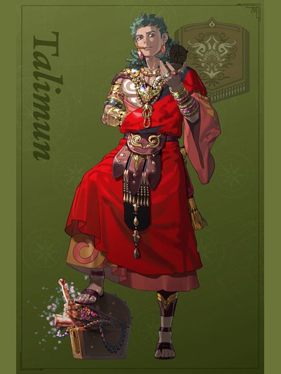

COMPANION DOSSIER
塔利穆恩
タリムーン · 月之谎 / 白鸦新娘团 / 其他
检索别名：谭利穆恩 / 塔利穆恩
喜欢什么，送什么
发酵饮料、咖啡、罕见书籍、棋盘游戏、绘画
喜欢的东西：钱、冒险、肉桂、调情、随心而行
查看送礼原文与例外 →第一部 · 各路线加入条件
原手册未提供此角色的四路线招募表。
查看招募原文与附加说明 →交涉要准备什么
本批尚未独立核对该角色交涉流程。先看上方原表的物品、金钱、外传与 S／R 门槛；没有写出明细不代表无条件加入。
怎么养，怎么转职
编辑培养建议
黑魔法输出／远程弱化支援
- 前期
- 这里指第三部入队初期：第一部完成塔利穆恩外传后，第三部第一区分随剧情加入；不是第一部可招募角色。入队后沿先知（ウァテス）继续练黑魔术，先用现有法术补输出，不必重走初级职业。
- 中期
- 弱化前先选好接力攻击的队友。「鈍化の冥呪」使敌人攻速减半；「防転の冥呪」交换守备与魔防，先比较两项数值和主攻手的伤害类型，避免反而帮敌人补强防御。效果只维持一次战斗或一回合，不要先被无关攻击消耗。
- 后期目标
- 以德鲁伊（ドルイド）为集中投入方案，延续黑魔术训练。该职黑魔法次数翻倍，装备魔法时命中+7，适合在后排持续输出；不要为贴邻敌人触发精通后的魔防咒缚，牺牲安全站位。
- 考试与解锁
- 先知以黑魔术 B、德鲁伊以黑魔术 A 为备考方向；德鲁伊属于第三部最上级职，须当前考试已开放并核对票证与通过率。德鲁伊可用黑魔术，不能因角色学会回复魔法便默认此职能使用白魔术。
- 取舍与限制
- 「抵抗」免除的是 Burst 导致的最大HP下降，冥咒本身仍消耗HP，使用前预留治疗。「勝利の風」在自己或敌人攻击时按幸运百分比触发：自己攻击时命中+15，敌人攻击时回避+15，并非同时常驻。已有成熟法师时，可先让他承担关键弱化与收尾，按实际缺口再追加培养。
这些是阶段性培养方向，并非必须逐级转职的固定链。适用难度及版本未做独立实测；优先满足当前队伍缺口。
本次新增条目经过来源页面核对，未逐项游戏内实测。没有补充明细的“交涉”仍待核验，不表示没有额外要求。